Project Overview
My final project focuses on building a smart inventory system for nail gel and nail polish products. Nail bottles come in many different shapes and sizes, so the project combines a custom storage enclosure with electronics that can track whether a product is present, whether it has been checked out, and roughly how much product remains.
Bill of Materials
A running list of the parts, supplies, and costs for the final build.
| Part | Purpose | Qty | Source | Cost |
|---|---|---|---|---|
| Xiao microcontroller | Runs RFID, load sensor, LED, and command logic | 1 | Lab stock | $0.00 |
| Cell Load sensor | Measures polish weight | 2 | Lab stock | $0.00 |
| HX711 Amplifier | Amplifies the measurements from load sensor for Xiao | 2 | Lab stock | $0.00 |
| MFRC 522 RFID scanner | Identifies bottles for check-in and check-out | 1 | Lab stock | $0.00 |
| RFID tags | Attach identities to individual polish bottles | TBD | Lab stock | $0.00 |
| LED | Provides visual scan feedback | 1 | Lab stock | $0.00 |
| 3D-printed base | Stabilizes the drawer and sensor placement | 1 | Printed | $0.00 |
| 3D-printed sensor housing | Holds the half-cell sensors in place | 1 | Printed | $0.00 |
| Plywood | Used to build the drawer enclosure | TBD | Lab stock | $0.00 |
| Estimated Total | $0.00 | |||
MVP Concept
The first iteration is an enclosure that can hold nail polish while hiding load sensors underneath a false bottom. Each polish can be scanned with an RFID reader when it is removed and scanned again when it is returned. The load sensors help track changes in weight, while the RFID system handles identity and check-in/check-out status.
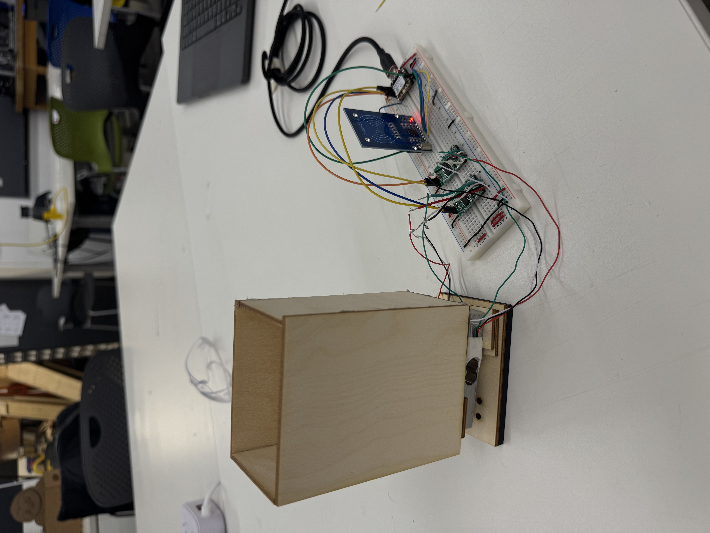
Physical Enclosure
The drawer was built to hold nail polish above the sensors. I used the maximum height of the polish bottles to set the wall height, then made alignment measurements with cardboard before assembling the structure. The drawer could hold polish, but the walls were a little too tall, which made the bottles harder to grab.
Balancing the drawer and getting consistent readings from the load sensors was difficult, so I added a 3D-printed base. The readings are still not as consistent as I want, so the next enclosure revision should adjust how the sensors contact the drawer and may use higher-precision sensors.
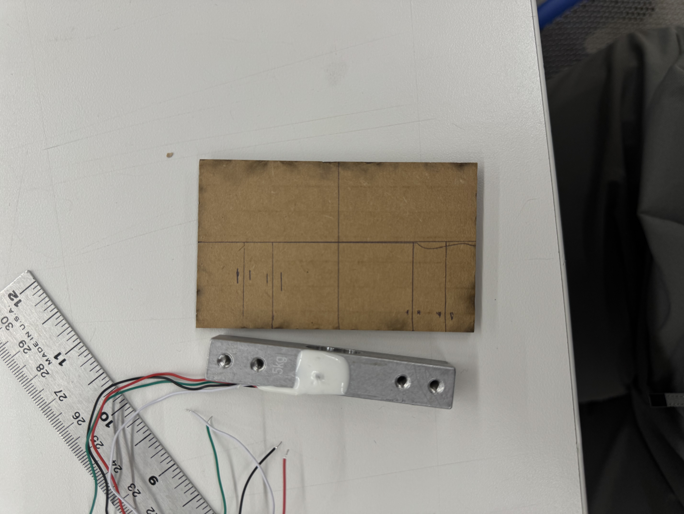
Electronics
The MVP circuit connects two load sensors, an RFID scanner, and an LED to a Xiao. The LED currently acts as a visual indicator that a tag was scanned, mostly for debugging. Future outputs could include additional LEDs or a speaker to distinguish successful scans, failed scans, and newly registered weights.
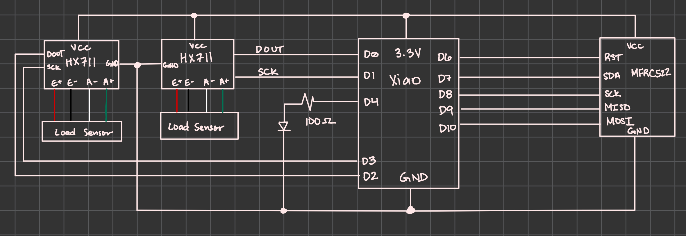
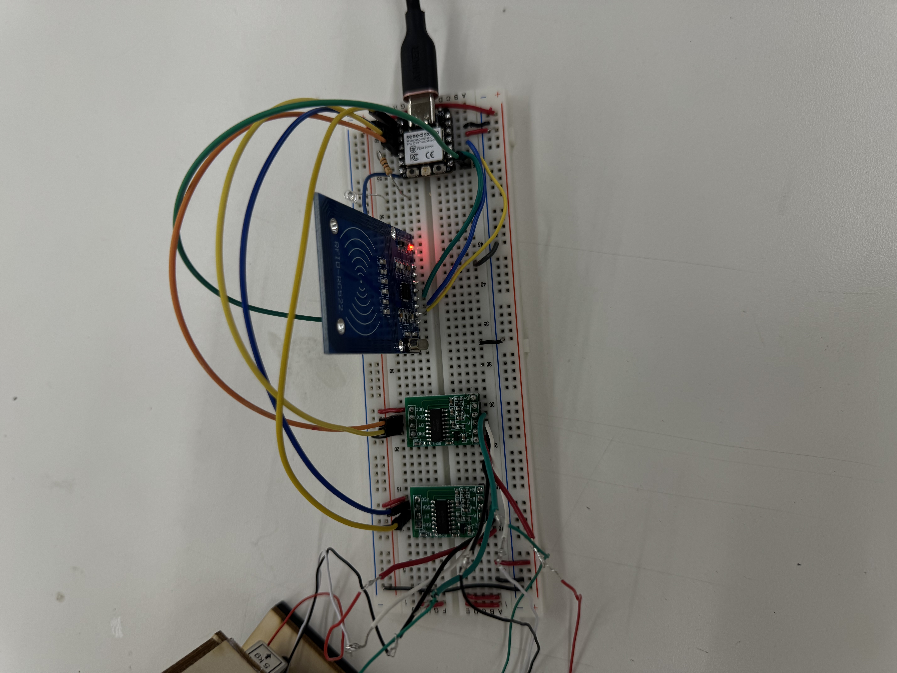
Software
The current Arduino code uses separate class systems for the LED, RFID scanner, load sensors, and serial command interface. The test database is still small, but the system can tare, recalibrate, and check nail polishes in and out. After each action, the serial monitor gives feedback to the user.
For a future pass, I want to clean up the code structure and combine some overlapping logic. The calibration logic works as a separate class right now, but it may make more sense inside the scale sensor class.
Next Steps
- Lower or reshape the drawer walls so the polish is easier to remove.
- Improve how the drawer contacts the load sensors for more consistent readings.
- Test higher-precision sensors because the weight changes can be small.
- Add clearer output feedback for scan success, scan failure, and new weight registration.
- Connect the physical inventory data to a website or visual interface.
- Clean up the Arduino class structure and expand the polish database functions.
Updates and Project Integration
Sensors
One of the biggest suggestions I had during our design review involved changing the method I measured changes in weight. When debating on what path to take, I eventually settled on half-cell sensors. While doing some research on them, I came across a tutorial that I ended up using to integrate the new sensor.
I ended up printing a new 3D housing for the half-cell sensor to attach it to the base. The STL file can be found here. Afterwards, I followed the tutorial to wire a single half-cell sensor. However, when running code to test it, I found that the measured values of the sensor kept oscillating. I tried to troubleshoot the problem through various methods, replacing different parts of the circuit, resoldering connections, and using different voltages. Jessica suggested shortening the wires connected to the sensors and using the oscilloscope to help identify where exactly the problem is, which I plan to do next.
Code
One of my goals after MVP week was to create a website or visual interface to interact with my inventory system. Using what we learned, I transformed the code I made for my MVP, utilizing websockets to create my interface. In addition, I wanted to to make the LED light more informative, for testing purposes. The result involved encoding information through flashes. The website itself has both an inventory status, displaying the database and information per entry, as well as a section for live sensor readings.
For the future, I still need to implement more functionality, including adding/deleting polishes. I might also tweak the design of the website, but that's just an aesthetic issue. As for the wider project, I'm hoping to make it independent of my computer soon, adding a different source for power. However, doing so requires me to figure out the sensor first.
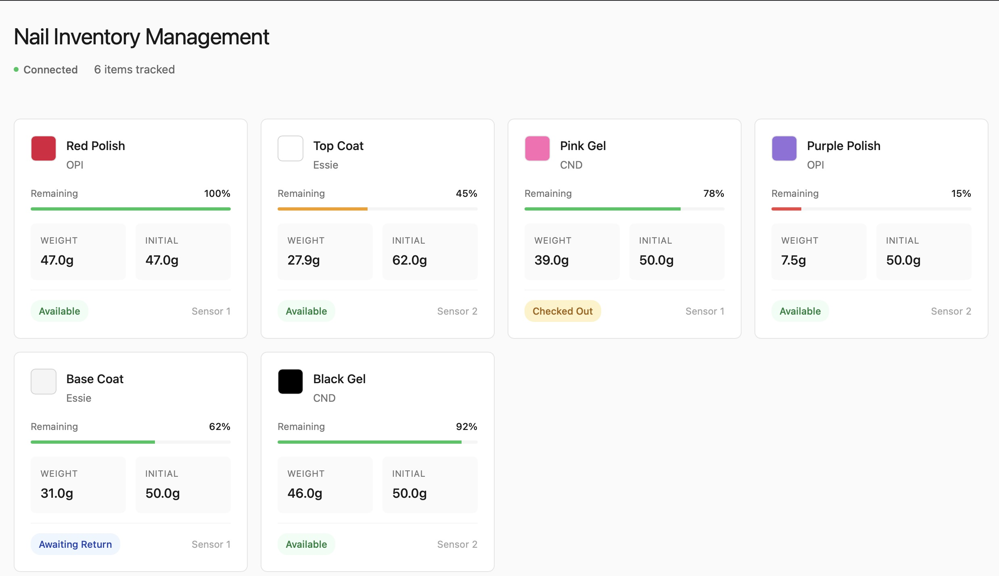
Final Sprint
Sensors
As mentioned previously, I tried to incorporate square half-cell load sensors into my project. However, despite various methods of troubleshooting, including shortening the wires, braiding them, and using an oscilloscope to diagnose the problem, I couldn't figure out how to get consistent readings. Given the time constraint, I decided to go back to bar load sensors, this time only using one bar. My hope was that by using only one bar, I would decrease inconsistencies in readings that I encountered before. Either way, my readings before with the bar cell were already more consistent than with the square cell.
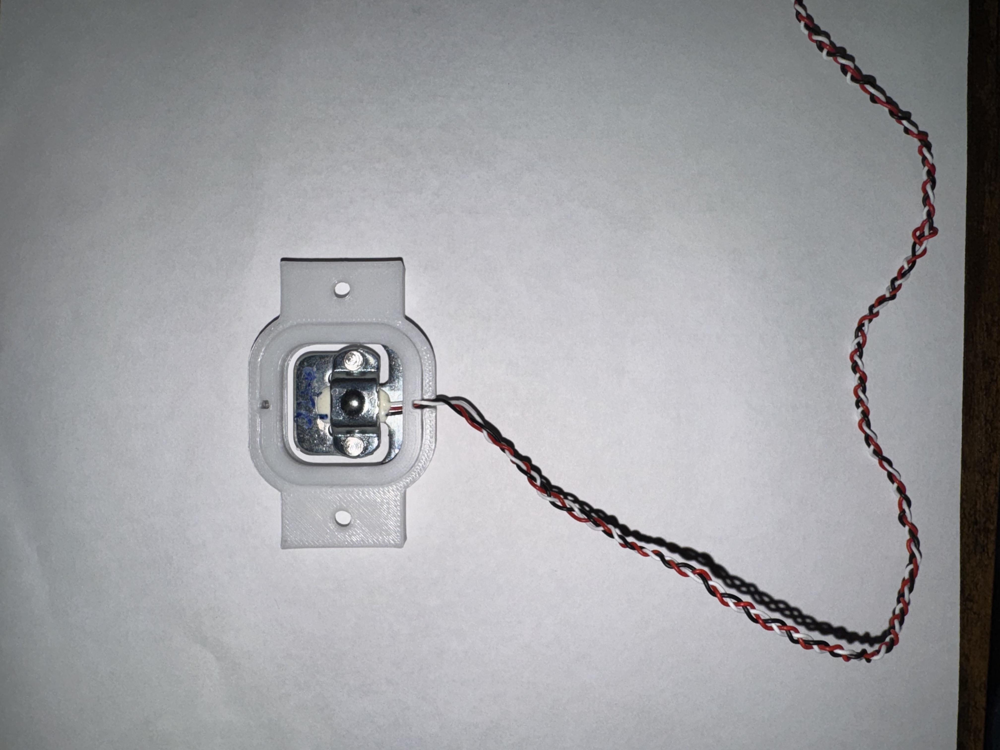
Code
However, after trying to run the old bar sensors with my code, I ran into various issues. First, my RFID scanner would no longer scan my polish. After many hours of testing and troubleshooting, I realized that my current libraries were no longer compatabile with each other, which is why I switched to a different amplifier library, also changing relevant code associated with it. In addition, I realized that even after changing libraries, I was getting highly inconsistent weight readings, similar to my half-cell readings. Eventually, I realized that changing libraries didn't fully stop the signal interference between the RFID and weight sensor, meaning that I had to find a better solution.
As for the website, I implemented small changes. I added buttons to tare and calibrate, since I often needed to do so for my project. Otherwise, the website stayed mostly the same.
Download the Arduino code for RFID Xiao
Download the Arduino code for Load Sensor Xiao
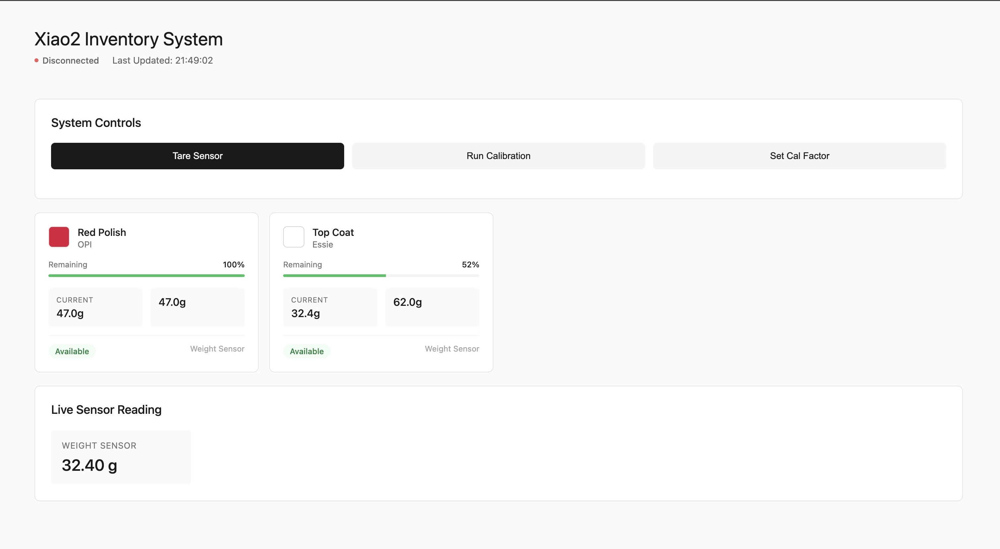
Circuitry
A bulk of the change happened in the wiring of this project. First, I decided to use two xiaos in order to avoid the signal interference that was present in the previous iteration. As such, I had to rewire my system for two xiaos, also adding in wiring to support serial communication. I also had to think about how to wire my xiaos with an independent power source. When using my computer, I just connected my xiaos' 5V pins to each other. However, when adding my 3.7V battery, I needed to rewire my circuitry to get power to both xiaos. After I figured out the wiring, I soldered them onto two small protoboards, since I wanted to hide them in my drawer.
The most difficult part here was keeping the wires connected to the battery and the sensor intact. They were pretty fragile, and often snapped after soldering due to moving them around a lot. I had to revist the soldering station often because of this.
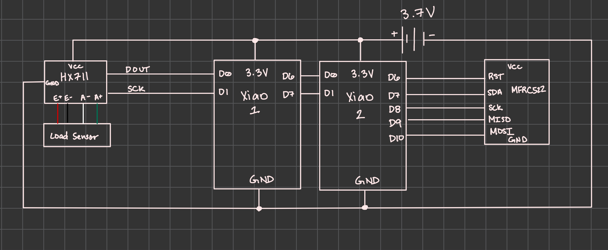
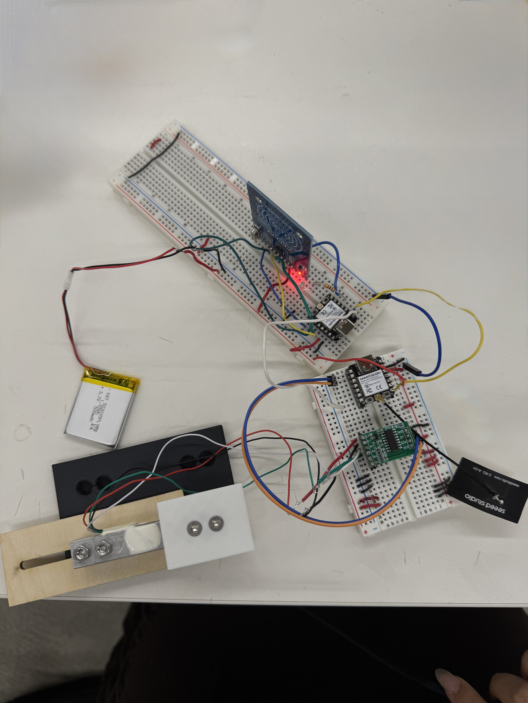
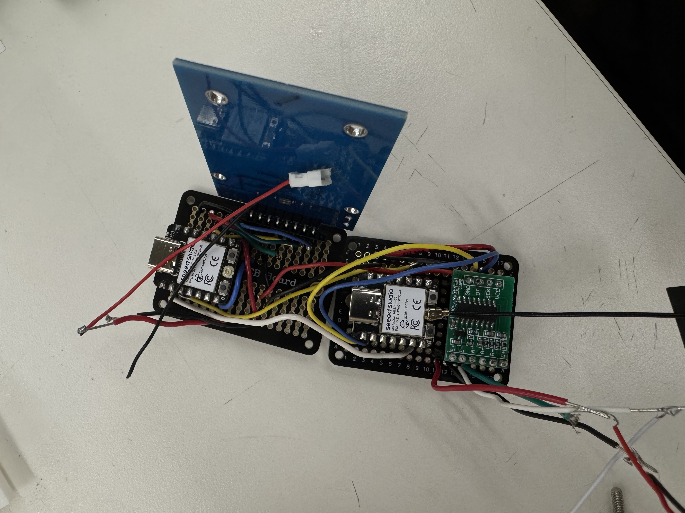
Enclosure
Finally, I had to redesign my drawer system. Taking into account both design issues in my MVP as well as logistical issues, I had to redo many aspects. First, I had to decrease the walls of my drawer. In the process, I had to also reconfigure it for only one load sensor. The result was a 3D-printed part that would mount directly onto the cell.
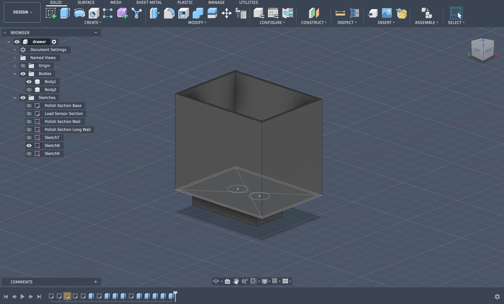
In addition, I had to figure out how to make the drawer function as one, sliding open and closed into the enclosure. Bobby recommended I use a slot to guide movement while also constraing it in a linear motion. I prototyped with different lengths to decide the depth of motion. Once I figured that out, I made the full enclosure, complete with a false bottom to hold a heavy metal piece, centering the drawer. In addition, I decided to mount my protoboards on the top of my drawer, since it would hide the wiring while still keeping the form factor. Unfortunately, I didn't add enough clearance near the top of the drawer for this decision, but it would be an easy fix.
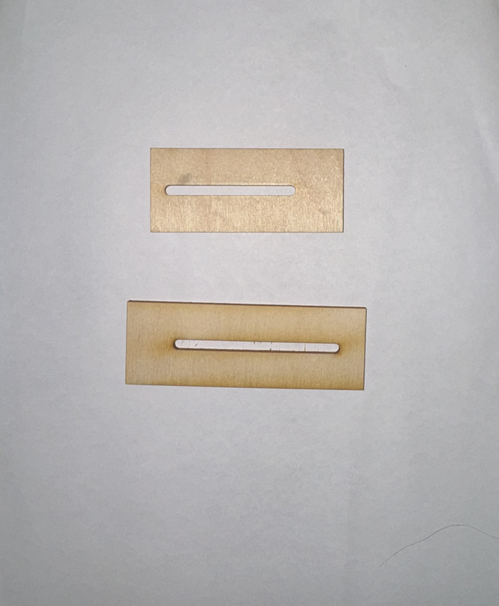

All together, the parts formed a demo!